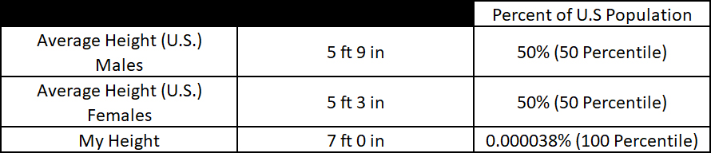

Based on the Centers for Disease Control, the average height for males in the United States is roughly 5 foot 9 inches whereas the average height for females is roughly 5 foot 3 inches.
Because of this, the world we live in is not designed for individuals at the extremes of the height spectrum. Based on personal experiences of being on the upper end of said spectrum at 7 feet tall, I am one of the roughly 2800 people worldwide to be 7 feet tall or taller. Based on my personal experiences, I believe that someone my height, while having a few advantages, has more disadvantages than the average male in the United States.
Head and shoulders above everyone else!